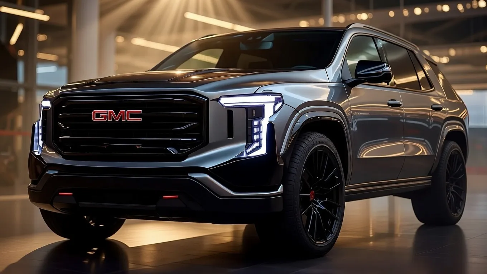

2026 GMC Yukon Launch Revealed: Unmatched Rugged Styling Meets High-End Luxury Tech


The 2026 GMC Yukon is set to make a statement in the full-size SUV market with its bold design and advanced technology features. The Yukon's exterior boasts a redesigned front fascia, featuring a larger grille and sleeker headlights, giving it a more aggressive stance on the road. Estimates suggest that the 2026 GMC Yukon specs will include a range of engine options, reportedly starting with a 5.3-liter V8 engine, while higher trim levels may offer a more powerful 6.2-liter V8 engine.
As the automotive industry continues to shift towards more luxurious and technologically advanced vehicles, the 2026 GMC Yukon is well-positioned to meet the demands of discerning buyers. With its rugged styling and high-end features, the Yukon is expected to appeal to a wide range of consumers, from outdoor enthusiasts to families seeking a comfortable and feature-rich vehicle. The GMC Yukon price 2026 is expected to start from approximately the six-figure range, with higher trim levels and optional features driving the cost upwards.
Engine and Towing Capability
The 2026 GMC Yukon's engine options are expected to deliver impressive towing capability, with the 5.3-liter V8 engine reportedly capable of towing up to 8,400 pounds. The more powerful 6.2-liter V8 engine may offer even higher towing capacity, potentially exceeding 9,000 pounds. The Yukon's towing capability is further enhanced by its advanced trailering system, which includes features such as trailer sway control and a trailer brake controller.
In addition to its impressive towing capacity, the 2026 GMC Yukon is also expected to offer a range of advanced technology features to enhance the driving experience. These may include a high-resolution infotainment system, a head-up display, and a range of driver assistance features, such as lane departure warning and blind spot monitoring. The Yukon's interior is also expected to feature premium materials and comfortable seating for up to eight passengers.
The 2026 GMC Yukon's engine and towing capability make it an ideal vehicle for outdoor enthusiasts and those who require a vehicle that can handle heavy trailers. With its advanced technology features and luxurious interior, the Yukon is also well-suited for families and individuals seeking a comfortable and feature-rich vehicle.
Interior Space and Luxury Features
The 2026 GMC Yukon's interior is expected to feature premium materials and comfortable seating for up to eight passengers. The Yukon's interior space is generous, with ample legroom and cargo space. The vehicle's cargo area is reportedly capable of holding up to 94.7 cubic feet of cargo, making it an ideal choice for families and outdoor enthusiasts who require a vehicle that can handle large amounts of gear.
The 2026 GMC Yukon's luxury features are expected to include a range of advanced technology features, such as a high-resolution infotainment system, a head-up display, and a range of driver assistance features. The Yukon's interior is also expected to feature premium materials, such as leather upholstery and wood trim, giving it a luxurious and refined feel. The vehicle's luxury features are further enhanced by its comfortable seating and generous interior space, making it an ideal choice for long road trips and daily driving.
The 2026 GMC Yukon's interior space and luxury features make it an ideal vehicle for families and individuals seeking a comfortable and feature-rich vehicle. With its advanced technology features and luxurious interior, the Yukon is well-positioned to meet the demands of discerning buyers who require a vehicle that can handle both on-road and off-road driving.
Also Read
More Tech stories →Technology and Driver Assistance
The 2026 GMC Yukon is expected to feature a range of advanced technology features, including a high-resolution infotainment system and a range of driver assistance features. The vehicle's infotainment system is reportedly capable of supporting both Apple CarPlay and Android Auto, making it easy to integrate smartphones and access a range of apps and features. The Yukon's driver assistance features are expected to include lane departure warning, blind spot monitoring, and forward collision alert, giving drivers added peace of mind and enhancing safety on the road.
In addition to its advanced technology features, the 2026 GMC Yukon is also expected to offer a range of convenience features, such as a wireless charging pad and a range of USB ports. The vehicle's technology features are further enhanced by its advanced safety features, such as a rearview camera and a range of airbags, giving drivers and passengers added protection in the event of an accident.
The 2026 GMC Yukon's technology and driver assistance features make it an ideal vehicle for families and individuals seeking a safe and feature-rich vehicle. With its advanced technology features and luxurious interior, the Yukon is well-positioned to meet the demands of discerning buyers who require a vehicle that can handle both on-road and off-road driving.
Key Takeaways
- The 2026 GMC Yukon is expected to feature a range of engine options, including a 5.3-liter V8 engine and a 6.2-liter V8 engine.
- The vehicle's towing capability is reportedly capable of handling up to 9,000 pounds, making it an ideal choice for outdoor enthusiasts and those who require a vehicle that can handle heavy trailers.
- The 2026 GMC Yukon's interior is expected to feature premium materials and comfortable seating for up to eight passengers, with ample legroom and cargo space.
Price and Trim Levels
The 2026 GMC Yukon price is expected to start from approximately the six-figure range, with higher trim levels and optional features driving the cost upwards. The vehicle's trim levels are reportedly expected to include the SLE, SLT, and Denali, each with its own unique features and options. The SLE trim is expected to be the base model, with the SLT and Denali trims offering increasingly more advanced features and luxurious interior appointments.
The 2026 GMC Yukon's price and trim levels make it an ideal vehicle for families and individuals seeking a comfortable and feature-rich vehicle. With its advanced technology features and luxurious interior, the Yukon is well-positioned to meet the demands of discerning buyers who require a vehicle that can handle both on-road and off-road driving.
How It Compares to Tahoe and Ford Expedition
The 2026 GMC Yukon is expected to compete directly with the Chevrolet Tahoe and Ford Expedition, both of which are full-size SUVs with similar features and capabilities. The Yukon's advanced technology features and luxurious interior are expected to give it an edge over its competitors, while its towing capability and off-road performance are expected to make it a top choice for outdoor enthusiasts.
In comparison to the Tahoe and Expedition, the 2026 GMC Yukon is expected to offer a more refined and luxurious interior, with premium materials and advanced technology features. The vehicle's towing capability and off-road performance are also expected to be superior to its competitors, making it an ideal choice for those who require a vehicle that can handle heavy trailers and rugged terrain.
Frequently Asked Questions
What is the expected price of the 2026 GMC Yukon?
The 2026 GMC Yukon price is expected to start from approximately the six-figure range, with higher trim levels and optional features driving the cost upwards.
What are the expected engine options for the 2026 GMC Yukon?
The 2026 GMC Yukon is expected to offer a range of engine options, including a 5.3-liter V8 engine and a 6.2-liter V8 engine.
What is the towing capability of the 2026 GMC Yukon?
The 2026 GMC Yukon's towing capability is reportedly capable of handling up to 9,000 pounds, making it an ideal choice for outdoor enthusiasts and those who require a vehicle that can handle heavy trailers.
What are the expected trim levels for the 2026 GMC Yukon?
The 2026 GMC Yukon's trim levels are reportedly expected to include the SLE, SLT, and Denali, each with its own unique features and options.
Conclusion
The 2026 GMC Yukon is expected to be a top contender in the full-size SUV market, with its bold design, advanced technology features, and luxurious interior. The vehicle's towing capability and off-road performance are expected to make it an ideal choice for outdoor enthusiasts, while its comfortable seating and generous interior space make it a great option for families and individuals seeking a comfortable and feature-rich vehicle.
With its expected price starting from approximately the six-figure range, the 2026 GMC Yukon is a significant investment, but one that is likely to pay off for those who require a vehicle that can handle both on-road and off-road driving. The Yukon's advanced technology features and luxurious interior make it a top choice for discerning buyers, and its towing capability and off-road performance make it an ideal choice for those who require a vehicle that can handle heavy trailers and rugged terrain.
Marcus Webb
Senior Editor
Tech journalist with 8+ years of experience covering the latest in smartphones, EVs, AI, and consumer electronics. Bringing you accurate, well-researched stories from the world of technology.
Leave a Comment